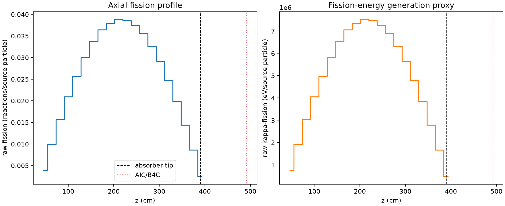
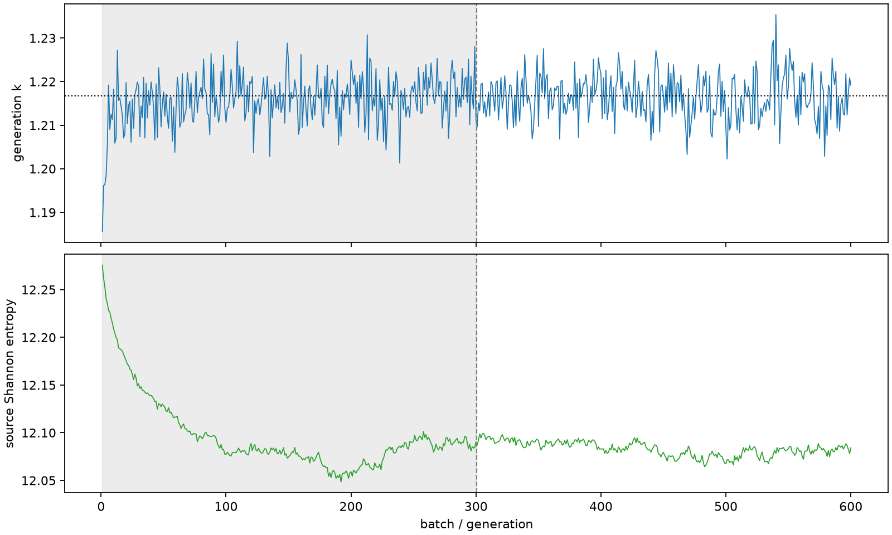

| field | value |
|---|---|
| experiment | V2-STAGE_256_OGRENCI_02-0031 |
| k | 1.2167521037777045 |
| MC standard error | 0.00018059738638490864 |
| seconds | 932.2325907369959 |
| acceptance | not_assessed |
| convergence | review_required |
Completed is output integrity only; physical and statistical review required. Zero tallies do not prove zero production or zero uncertainty.
| diagnostic | value |
|---|---|
| geometric fuel voxels | 5280 |
| zero fission tally voxels | 0 |
| low signal fuel voxels | 0 |
| low signal fission share | 0.0 |
| low signal kappa share | 0.0 |
| important fission share | 0.9500599177462521 |
| previous filter included | 5280 |
| duration estimate s | 1562.5173488400023 |
| actual minus estimate s | -630.2847581030064 |
| fission relative MC error | statistics |
|---|---|
| all_geometric_fuel | {"voxels": 5280, "positive_mean_voxels": 5280, "zero_mean_voxels": 0, "undefined_relative_error_voxels": 0, "median": 0.010695891328626415, "p95": 0.03110564923119945, "maximum": 0.04029736755527192} |
| low_signal | {"voxels": 0, "positive_mean_voxels": 0, "zero_mean_voxels": 0, "undefined_relative_error_voxels": 0, "median": null, "p95": null, "maximum": null} |
| important_95pct | {"voxels": 4229, "positive_mean_voxels": 4229, "zero_mean_voxels": 0, "undefined_relative_error_voxels": 0, "median": 0.010014811917071757, "p95": 0.014504701111224512, "maximum": 0.01840648355688778} |
| outside_previous_filter | {"voxels": 0, "positive_mean_voxels": 0, "zero_mean_voxels": 0, "undefined_relative_error_voxels": 0, "median": null, "p95": null, "maximum": null} |
| kappa_fission relative MC error | statistics |
|---|---|
| all_geometric_fuel | {"voxels": 5280, "positive_mean_voxels": 5280, "zero_mean_voxels": 0, "undefined_relative_error_voxels": 0, "median": 0.01068358712071463, "p95": 0.03106767678744708, "maximum": 0.04024865816116012} |
| low_signal | {"voxels": 0, "positive_mean_voxels": 0, "zero_mean_voxels": 0, "undefined_relative_error_voxels": 0, "median": null, "p95": null, "maximum": null} |
| important_95pct | {"voxels": 4229, "positive_mean_voxels": 4229, "zero_mean_voxels": 0, "undefined_relative_error_voxels": 0, "median": 0.010003650465671116, "p95": 0.014487586242066645, "maximum": 0.018384596880165884} |
| outside_previous_filter | {"voxels": 0, "positive_mean_voxels": 0, "zero_mean_voxels": 0, "undefined_relative_error_voxels": 0, "median": null, "p95": null, "maximum": null} |
| axial bin | fission share | kappa-fission share |
|---|---|---|
| 1 | 0.00794750157794803 | 0.007947892780835355 |
| 2 | 0.01999617451496502 | 0.01999629908322345 |
| 3 | 0.03153400247876216 | 0.0315340172921057 |
| 4 | 0.04216931791365624 | 0.042169255941619264 |
| 5 | 0.05181586955023858 | 0.05181579584526384 |
| 6 | 0.060462065819614746 | 0.060462072406503045 |
| 7 | 0.06809494972739785 | 0.06809487090760029 |
| 8 | 0.07338215621848423 | 0.07338194024754065 |
| 9 | 0.07639462126593886 | 0.07639448237105823 |
| 10 | 0.0781031106184806 | 0.07810299521662661 |
| 11 | 0.07761373759163201 | 0.07761377172734964 |
| 12 | 0.07555445533418471 | 0.07555424768363667 |
| 13 | 0.0716601622737857 | 0.07166005483353231 |
| 14 | 0.06557122474411585 | 0.06557119836193054 |
| 15 | 0.058546557640386576 | 0.05854644488799202 |
| 16 | 0.04986036766849691 | 0.04986020436169756 |
| 17 | 0.039901225852269864 | 0.03990110041830248 |
| 18 | 0.028989549055707397 | 0.028989630689675583 |
| 19 | 0.017391053870452207 | 0.01739103296231929 |
| 20 | 0.005011896283482608 | 0.005012691981187577 |
Histories include the inactive-to-active transition at batch 300. kappa-fission approximates fission energy production, not total heat deposition.

